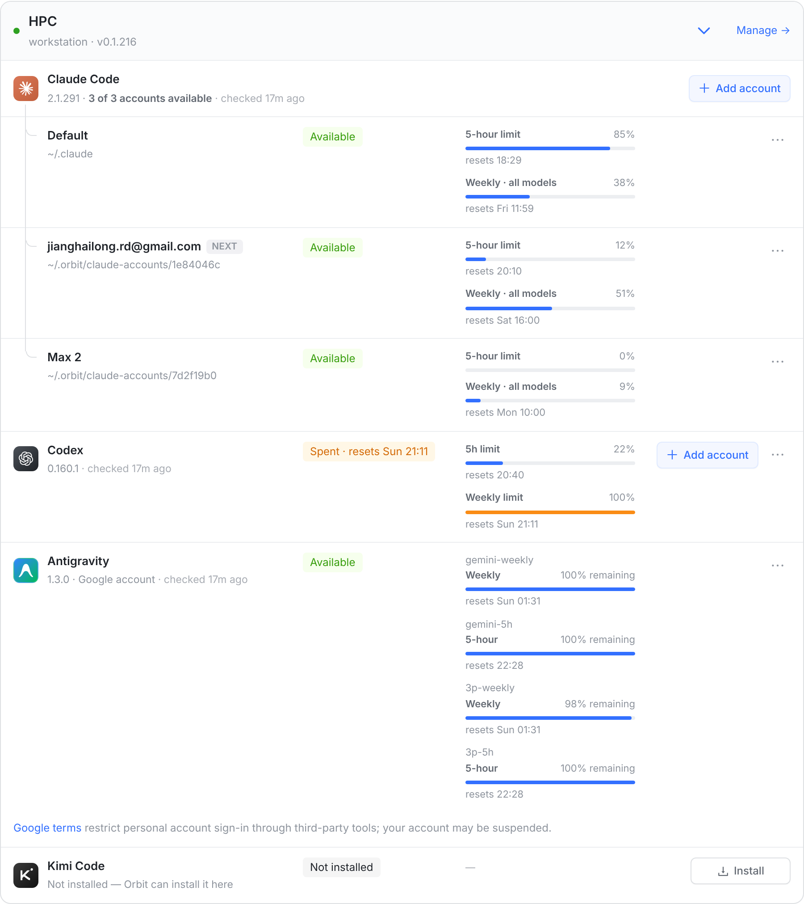
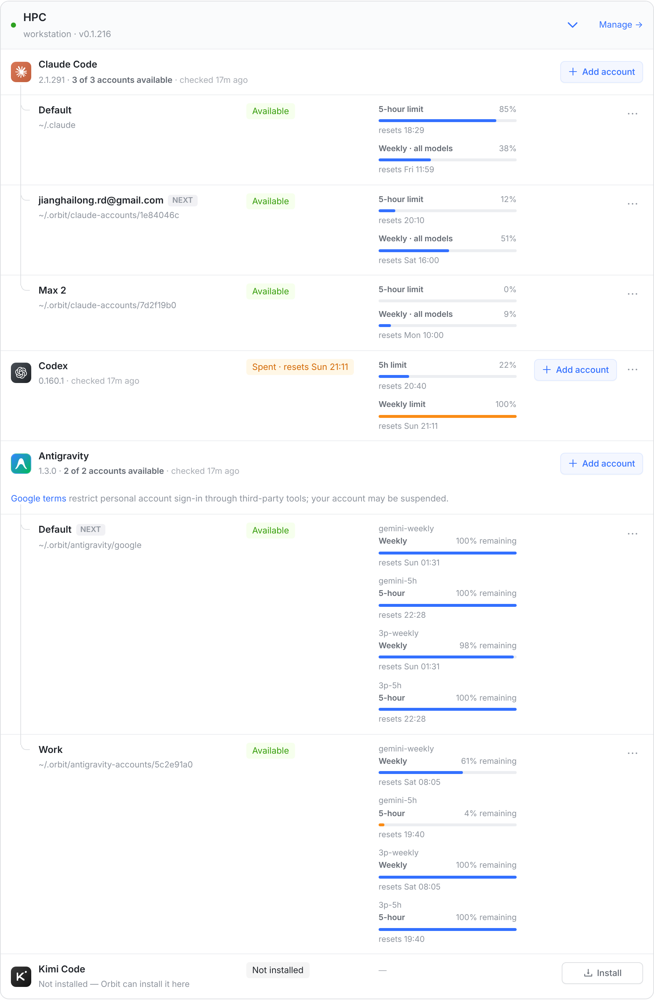
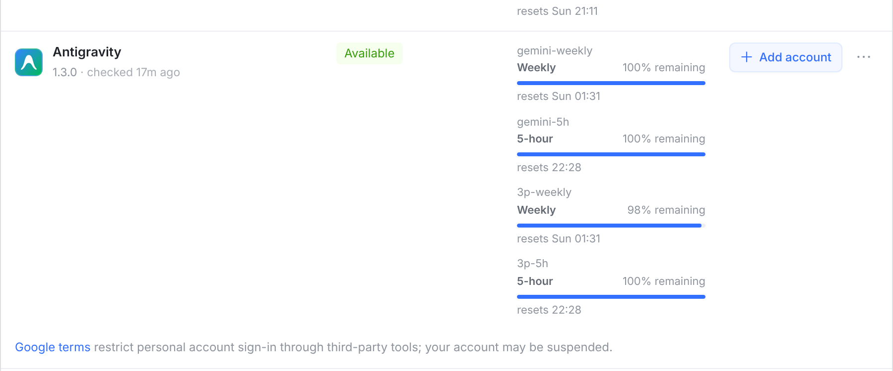
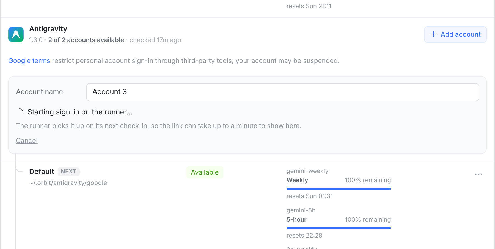

四张都是真实 web 控制台截图（同一套组件和样式，接口数据是造的）。「改后」只是把 Antigravity 加进账号引擎名单（和 Claude Code、Codex 共用的那份 ACCOUNT_ENGINES），每个账号读自己的额度——页面上其余东西都是现成的：分组头、账号行、NEXT、⋯ 菜单（改名 / 重新登录 / 暂停 / 移除）、加账号面板。

A BA 写 Google account，不说有几个账号。B Claude Code、Codex 行上都有「+ Add account」，Antigravity 没有：机器上只能有一个 Google 账号，换号只能在 ⋯ 里 Re-sign in 把它顶掉。

1 2 3 4 5① 分组头写「2 of 2 accounts available」，和 Claude Code 的一样。② 「+ Add account」。③ Google 条款留在 Antigravity 名下、紧挨着加账号按钮。④ NEXT：自动选账号时下一个会话用哪个。⑤ 每个账号自己的四条额度；Work 的 gemini-5h 只剩 4%，条变橙。

6 7⑥ 一个账号时就是一行，和 Codex 一样：不再写 Google account。⑦ 但已经有「+ Add account」——从一个账号到两个就是从这里开始的。

8⑧ Claude Code 加账号的同一个面板：名字先叫 Account 3，点下就开始 Google 登录；接下来是「Open the sign-in page → 粘贴授权码」，成功后面板自己收起，多出一行新账号（和 iOS 图 3 同一套规则）。